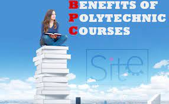

ELIGIBILITY FOR DIPLOMA:
-
Candidate should be an Indian National and should have passed the SSC
(Std.X) examination of Maharashtra State Board of Secondary Education
or its equivalent, with subjects Maths/Mathematics, General Science
and English, with minimum 35% aggregate marks.
- Pass out of class 10th or 12th for (pharmacy)
-
Should pass in the entrance exam and councelling during admission
process conducted by different states.
BENIFITS OF DIPLOMA:
- short term
- low fee
- Fast turn around time for job search
-
Diploma allows the individual to explore various career options
-
Diploma in engineering makes students job-ready faster, so their
chances of being hired and valued increase.

FEATURES OF DIPLOMA:
-
Candidates interested in solving problems and assisting businesses
with technical requirements must look forward to the course.
-
Information technology is used generally for all computer-related
works. Specifically, it is about transmitting, receiving, and storing
data in the form of records which are not only essential for large
organizatis but small businesses.
-
A Diploma in IT prepares the student to be well in database handling,
record keeping, software development, and basic computer applications
which can help them increase employability exponent in the field.
-
The technology department in a workforce comprises people looking into
the software as well as hardware of the computer and the diploma in IT
provides the candidate with both the skills to be part of the
workforce.